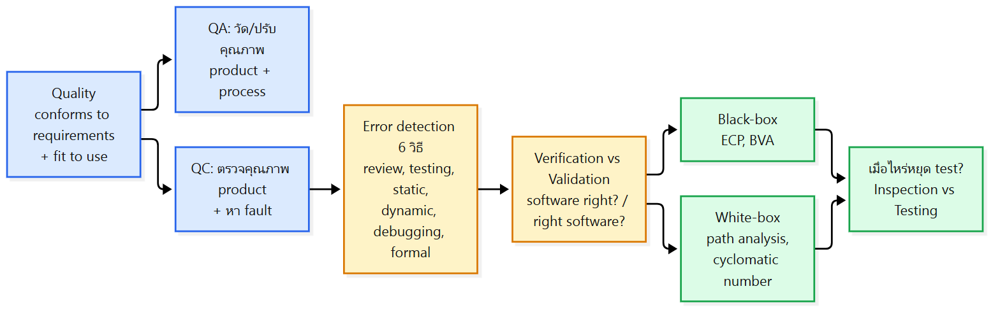
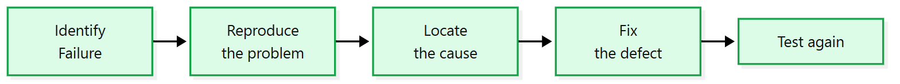
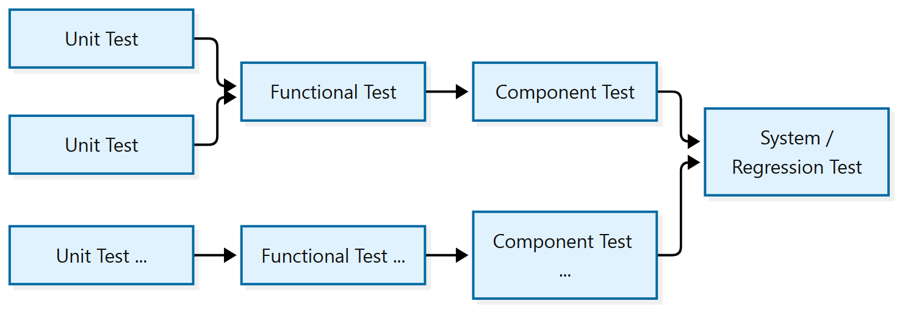
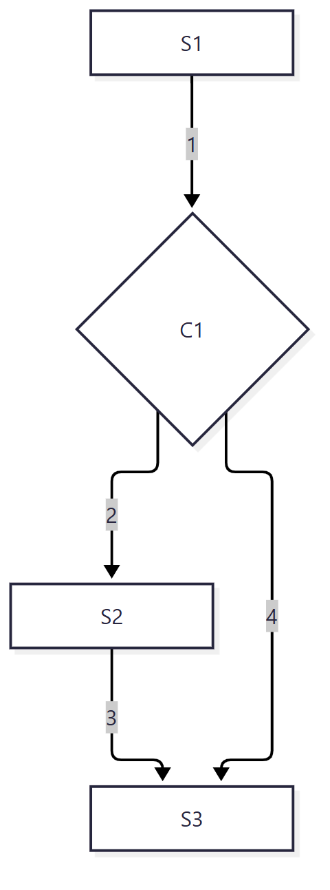
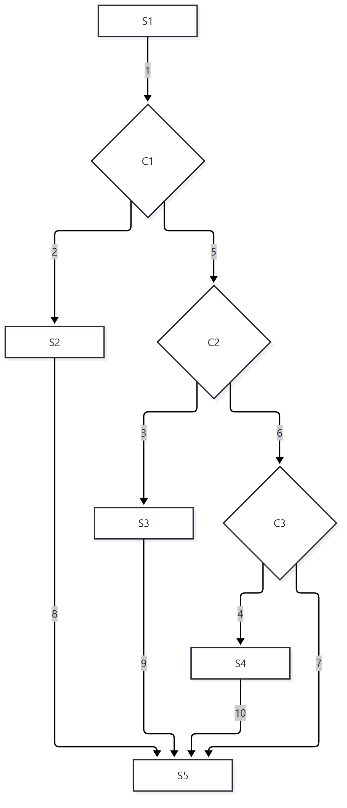
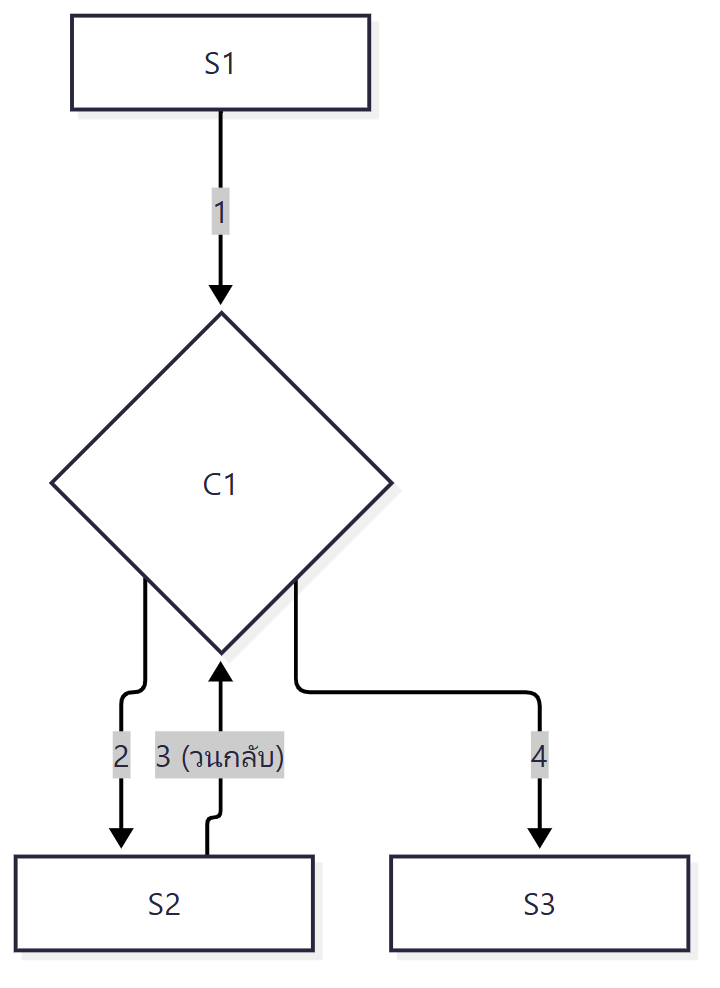
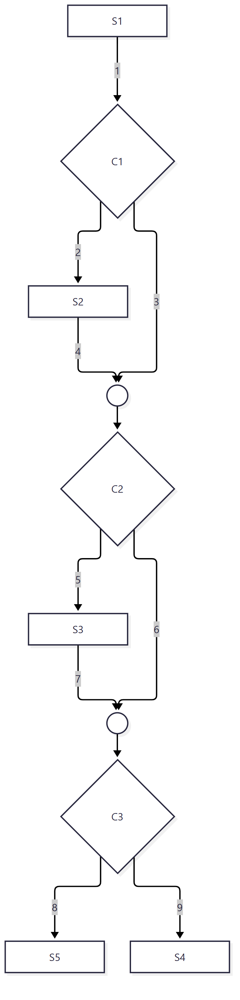

ภาพรวมบทนี้: หลัง implementation (L10) และจัดการเวอร์ชัน (L11) ต้องตรวจว่าซอฟต์แวร์ มีคุณภาพ บทนี้ปูพื้น QA vs QC, 6 วิธีหา error, verification vs validation และ fault/error/failure จากนั้นลงเทคนิค test 2 ฝั่ง: black-box (ECP, BVA) และ white-box (path analysis, cyclomatic number) ปิดด้วย เมื่อไหร่ควรหยุด test และ inspection vs testing
มีโจทย์ทำ test case หลายข้อ (ECP, BVA, นับ independent path)

1. QA กับ QC ต่างกันยังไง?
แก่นQA = ทุกกิจกรรมที่วัดและปรับปรุงคุณภาพของทั้ง product และ process ส่วน QC = กิจกรรมที่ตรวจคุณภาพของ product และหา fault ทั้งสองอย่างต้องมี process, tools และ team ที่ดี
| Quality Assurance (QA) | Quality Control (QC) | |
|---|---|---|
| นิยาม | all activities designed to measure and improve quality | activities designed to verify the quality and detect faults |
| ครอบคลุม | product และ process | product |
- ทั้งคู่ต้องการ process, tools และ team ที่ดี
2. วิธีหา error มีอะไรบ้าง? (6 วิธี)
แก่นcode review และ static analysis ตรวจโดยไม่รันโปรแกรม ส่วน testing และ dynamic analysis ต้องรัน debugging หาสาเหตุหลังพบ error และ formal methods ใช้คณิตศาสตร์พิสูจน์
| วิธี | หลักคิด | ตัวอย่าง / ประเภทย่อย |
|---|---|---|
| Code Review | ตรวจ source code หา defect ก่อนรัน | Code inspection (ตรวจเป็นระบบตามเกณฑ์), Peer review (developer อื่นตรวจ), Walkthrough (author อธิบายโค้ดทีละขั้นให้ reviewer), Static analysis (tool วิเคราะห์โดยไม่รัน) |
| Testing | รันซอฟต์แวร์ แล้วดูว่าพฤติกรรมตรงที่คาดไหม | Unit (function/class), Integration (ปฏิสัมพันธ์ระหว่าง component), System (ทั้งระบบ), Acceptance (ตรง requirement ของผู้ใช้/ธุรกิจ), Regression (การเปลี่ยนแปลงใหม่ไม่ทำให้เกิด defect ใหม่) |
| Static Analysis | หาปัญหา โดยไม่รันโปรแกรม | syntax/type errors, unused variables, unreachable code, code smells, security vulnerabilities, potential null-pointer errors, violations of coding standards |
| Dynamic Analysis | หาปัญหา ขณะโปรแกรมรัน | runtime error detection, memory leak detection, performance monitoring, debugging, code coverage analysis, profiling |
| Debugging | หาตำแหน่งและสาเหตุของ failure หลังเห็น error แล้ว | breakpoints, step-by-step execution, variable inspection, logging/tracing, stack-trace analysis |
| Formal Methods | ใช้ คณิตศาสตร์ แสดงว่าซอฟต์แวร์มีคุณสมบัติตามที่กำหนด | formal specification, model checking, theorem proving, formal verification |
ขั้นตอน debugging (สไลด์ 10):

⚠️ Static vs Dynamic: static = ไม่รัน | dynamic = รันอยู่ สังเกตว่า "debugging" อยู่ในรายการตัวอย่างของ dynamic analysis ด้วย
💡 เชื่อมกับ L10: debugging ใน L10 มี 4 phase (stabilization → localization → correction → verification) ส่วนสไลด์นี้แบ่งเป็น 5 กล่อง
3. "Quality" คืออะไร และ Verification กับ Validation ต่างกันยังไง?
แก่นquality = ตรงตาม requirement และเหมาะกับการใช้งาน verification ถามว่า "สร้างถูกวิธีไหม" (ผลของแต่ละ phase ตรงกับ phase ก่อน) ส่วน validation ถามว่า "สร้างของที่ใช่ไหม" (ตอนจบตรงกับการใช้งานจริง)
Quality (สไลด์ 12) มี 2 ด้าน: ✔ Conforms to requirements และ Fit to use
| Verification | Validation | |
|---|---|---|
| นิยาม (Ammann & Offutt) | ตัดสินว่า ผลของ phase หนึ่ง ในกระบวนการพัฒนา ตรงตาม requirement ที่ตั้งไว้ใน phase ก่อนหน้า หรือไม่ | ประเมินซอฟต์แวร์ ตอนจบการพัฒนา ว่า ตรงกับการใช้งานที่ตั้งใจ (intended usage) หรือไม่ |
| คำถาม | "Are we building the software right?" | "Are we building the right software?" |
| ด้าน quality ที่ตรงกัน | conforms to requirements | fit to use |
💡 จำ: validation = "right software" คือของที่ใช่สำหรับผู้ใช้ไหม | verification = "software right" คือสร้างถูกตามที่ phase ก่อนกำหนดไหม
Validation and Verification Activities (สไลด์ 14, Naik & Tripathy) – รูปตัว V: ฝั่งซ้ายเป็น Development ไล่ลงจาก Requirements ถึง Coding ฝั่งขวาเป็น Testing ไล่ขึ้นจาก Unit ถึง Acceptance แต่ละคู่จับกันดังนี้
| ฝั่ง Development | ↔ | ฝั่ง Testing | ประเภทลูกศร |
|---|---|---|---|
| Requirements | ↔ | Acceptance | Validation |
| High-Level Design | ↔ | System | Verification |
| Detailed Design | ↔ | Integration | Verification |
| Coding | ↔ | Unit | Verification |
- ในรูปสไลด์ยังมีลูกศร validation จาก High-Level Design, Detailed Design และ Coding ชี้ย้อนขึ้นไปหา Requirements ด้วย
4. Fault, Error, Failure ต่างกันยังไง?
แก่นfault = ข้อบกพร่องที่ฝังอยู่ในโค้ด (static), error = สถานะภายในที่ผิดเพราะ fault ทำงาน, failure = พฤติกรรมภายนอกที่ผิดจาก requirement
| คำ | นิยาม | ลักษณะ |
|---|---|---|
| Software Fault | static defect ในซอฟต์แวร์ | อยู่ในโค้ดเฉย ๆ |
| Software Error | สถานะภายในที่ผิด (incorrect internal state) ที่เป็นผลจาก fault | เกิดข้างในตอนรัน |
| Software Failure | พฤติกรรมภายนอกที่ผิด เทียบกับ requirement หรือพฤติกรรมที่คาดไว้ | ผู้ใช้มองเห็น |
- fault ในซอฟต์แวร์ = design mistake ในฮาร์ดแวร์
- ซอฟต์แวร์ไม่เสื่อม (does not degrade)
💡 ลำดับ: fault → error → failure (ข้างในโค้ด → ข้างในตอนรัน → ข้างนอกที่ผู้ใช้เห็น)
5. Testing คืออะไร และแบ่งได้กี่แบบ?
แก่นtesting = ตรวจพฤติกรรมของโปรแกรมแบบ dynamic บน test case จำนวนจำกัด เพื่อประเมินคุณภาพและหา defect ก่อนปล่อย แต่พิสูจน์ไม่ได้ว่าทำงานถูก 100%
5.1 Testing คืออะไร?
- เป็นกิจกรรมเพื่อ
- ประเมินคุณภาพ product
- ปรับปรุง product ด้วยการหา defect แล้วแก้ ก่อน release
- Dynamic (running-program) verification ของพฤติกรรมโปรแกรม บน ชุด test case จำนวนจำกัด ที่เลือกจาก execution domain
- ⚠️ Testing พิสูจน์ไม่ได้ว่า product ทำงานถูก 100% แม้เราใช้ testing แสดงว่าบางส่วนทำงานได้
5.2 Progression of Testing

- Unit Test หลายตัว → Functional Test → Component Test → System / Regression Test
5.3 Testing techniques แบ่งตาม 4 คำถาม
| คำถาม | คำตอบ |
|---|---|
| Who tests | Programmers, Testers, Users |
| What is tested | Unit testing, Functional testing, Integration / system testing, User interface testing |
| Why test | Acceptance, Conformance, Configuration, Performance / stress |
| How (test cases) | Intuition, Specification based (black-box), Code based (white-box), Existing cases (regression), Faults |
6. Black-box testing คืออะไร?
แก่นทดสอบจาก functional requirement โดยไม่ดูโค้ดข้างใน ป้อน input แล้วดูผลที่ interface ใช้เทคนิค ECP และ BVA
- ชื่ออื่น: behavioral testing หรือ functional testing
- เน้น functional requirements ของซอฟต์แวร์
- สร้างชุด input conditions มาทดสอบกับ function ที่เกี่ยวข้อง
- ทดสอบที่ software interface
- หา error ได้เรื่อง:
- function ผิดหรือขาด
- interface errors
- data structure / external database access errors
- behavior หรือ performance errors
- initialization และ termination errors
- เทคนิค: Equivalence Class Partitioning และ Boundary Value Analysis
7. Equivalence Class Partitioning (ECP) ทำยังไง?
แก่นแบ่ง input เป็นกลุ่มที่ "ถือว่าเหมือนกัน" แล้วเลือกตัวแทน 1 ค่าต่อกลุ่มมา test เพราะถ้าโปรแกรมพังกับสมาชิกหนึ่งตัว ก็น่าจะพังกับทุกตัวในกลุ่มนั้น
- เป็นเทคนิค specification-based, black-box
- แบ่ง input เป็นหลาย class ที่ถือว่าเท่ากันในแง่การหา error
- ใช้ ตัวแทน (representative) ของแต่ละ class มา test
- class กำหนดจาก intuition และ specs
- "If a program fails for one member of the class, then we expect to fail for all other members and vice versa"
ตัวอย่าง: หาเลขที่มากกว่า (Finding the largest number) (สไลด์ 22)
| Class | Representative |
|---|---|
| First > Second | 10, 7 |
| Second > First | 8, 12 |
| First = Second | 6, 6 |
ตัวอย่าง: ช่อง Age รับ 18–56 (สไลด์ 23)
| Class | ช่วง | เลือก test data |
|---|---|---|
| Valid | 18 – 56 | ค่าใดก็ได้ใน 18–56 |
| Invalid 1 | ≤ 17 | ค่าใดก็ได้ที่ ≤ 17 |
| Invalid 2 | ≥ 57 | ค่าใดก็ได้ที่ ≥ 57 |
Exercise 1 (สไลด์ 24): ช่องรับเลข 1–1000
| ≤ 0 | 1 – 1000 | ≥ 1001 |
|---|---|---|
| Invalid | Valid | Invalid |
Exercise 2 (สไลด์ 25): ช่องรับเฉพาะเลข 75, 253, 414
| 75, 253, 414 | ค่าอื่นที่ไม่ใช่ 75, 253, 414 |
|---|---|
| Valid | Invalid |
Exercise 3 (สไลด์ 26): ค่าตั๋วอุทยานตามอายุ
- เด็กอายุ ต่ำกว่า 12: ฟรี
- ผู้ใหญ่ 18–60: 200 บาท
- อายุ ต่ำกว่า 18 และมากกว่า 60: 100 บาท
| < 0 | 1 – 11 | 12 – 17 | 18 – 60 | > 60 |
|---|---|---|---|---|
| Invalid | Valid: Free | Valid: 100 Baht | Valid: 200 Baht | Valid: 100 Baht |
⚠️ เฉลยสไลด์ 26 แบ่งเป็น "< 0" กับ "1 – 11" ทำให้ อายุ 0 ไม่อยู่ใน class ไหนเลย ส่วน Exercise 5 (สไลด์ 30) ใช้ class "0–11" ถ้าออกสอบให้เช็กกับอาจารย์ว่าอายุ 0 นับเป็น Free หรือ Invalid
8. Boundary Value Analysis (BVA) ทำยังไง?
แก่นerror มักเกิดที่ขอบ จึง test ที่ค่าขอบของแต่ละ class (boundary, +1, −1) ไม่ใช่แค่ค่าใดค่าหนึ่งใน class และใช้ได้กับค่าที่เรียงลำดับได้เท่านั้น
- ขอบ (boundaries) มักเกิด error ง่าย
- BVA test ที่ขอบ แทนที่จะเลือกค่าใดก็ได้ใน class
- วิธีออกแบบ test case:
- ทำ ECP ก่อน
- เพิ่ม test case ที่ขอบ: boundary, +1, −1
- Reduced cases: มองว่าขอบอยู่ ระหว่าง ตัวเลข
- เช่น ขอบที่ 12: แบบปกติ = 11, 12, 13 | แบบ reduced = 12, 13 (ขอบอยู่ระหว่าง 12 กับ 13)
- จำนวน case เยอะ (ประมาณ 3 ต่อ class)
- ใช้ได้ เฉพาะค่า ordinal (เรียงลำดับและแบ่งเป็นช่วงได้)
8.1 อ่านตาราง BVA ยังไง?
ตารางในสไลด์มี 4 คอลัมน์:
- All Cases: ทุกค่ารอบขอบล่างและขอบบน (ขอบ −1, ขอบ, ขอบ +1)
- Belonging Cases: เฉพาะค่าใน All Cases ที่ อยู่ใน class นั้นจริง
- Reduced Class: เหลือแค่ ค่าขอบของ class (ค่าต่ำสุดและสูงสุดของ class)
ตัวอย่าง: Age Classification Problem (สไลด์ 28)
| Class | All Cases | Belonging Cases | Reduced Class |
|---|---|---|---|
| Low | −1, 0 | −1 | −1 |
| 0–12 | −1, 0, 1 / 11, 12, 13 | 0, 1, 11, 12 | 0, 12 |
| 13–19 | 12, 13, 14 / 18, 19, 20 | 13, 14, 18, 19 | 13, 19 |
| 20–35 | 19, 20, 21 / 34, 35, 36 | 20, 21, 34, 35 | 20, 35 |
| 36–120 | 35, 36, 37 / 119, 120, 121 | 36, 37, 119, 120 | 36, 120 |
| High | 120, 121 | 121 | 121 |
Exercise 4 (สไลด์ 29): ช่องรับเลข 1–1000
| Class | All Cases | Belonging Cases | Reduced Class |
|---|---|---|---|
| < 1 | 0, 1 | 0 | 0 |
| 1 – 1000 | 0, 1, 2 / 999, 1000, 1001 | 1, 2, 999, 1000 | 1, 1000 |
| > 1000 | 1000, 1001 | 1001 | 1001 |
Test cases: 0 → Invalid, 1 → Valid, 1000 → Valid, 1001 → Invalid
Exercise 5 (สไลด์ 30): ตั๋วอุทยาน + expected result
| Class | All Cases | Belonging Cases | Reduced Class | Expected Result |
|---|---|---|---|---|
| Invalid (< 0) | −1, 0 | −1 | −1 | Error: Invalid Age |
| 0–11 | −1, 0, 1 / 10, 11, 12 | 0, 1, 10, 11 | 0, 11 | Free |
| 12–17 | 11, 12, 13 / 16, 17, 18 | 12, 13, 16, 17 | 12, 17 | 100 |
| 18–60 | 17, 18, 19 / 59, 60, 61 | 18, 19, 59, 60 | 18, 60 | 200 |
| > 61 | 60, 61 | 61 | 61 | 100 |
⚠️ สไลด์ 30 ตั้งชื่อ class สุดท้ายว่า "> 61" แต่ค่าที่ใช้ทดสอบคือ 61 (ซึ่งไม่ได้ > 61) ตามโจทย์ควรเป็น "> 60" หรือ "≥ 61"
9. White-box testing คืออะไร?
แก่นทดสอบโดยดูโครงสร้างภายในของโค้ด ใช้ control structure สร้าง test case เพื่อให้ทุก path, ทุก decision, ทุก loop และ data structure ถูกทดสอบ
- ชื่ออื่น: glass-box หรือ structural testing
- ตรวจ รายละเอียดเชิง procedure อย่างใกล้ชิด (logical paths, การทำงานร่วมกันของ component)
- ใช้ control structure สร้าง test case
- สร้าง test case ที่:
- รับประกันว่าทุก independent path ใน module ถูกรันอย่างน้อย 1 ครั้ง
- ทดสอบ ทุก logical decision ทั้งฝั่ง true และ false
- รัน ทุก loop ที่ขอบและภายในขอบเขตการทำงาน
- ทดสอบ internal data structures ว่าถูกต้อง
Path analysis technique (สไลด์ 32)
- 2 งาน: วิเคราะห์ว่ามีกี่ path และ ตัดสินใจว่าจะ test path ไหน
- Coverage จากมากไปน้อย (decreasing coverage):
- Logical paths
- Independent paths
- Branch coverage
- Statement coverage
| Black-box | White-box | |
|---|---|---|
| ชื่ออื่น | behavioral / functional | glass-box / structural |
| ดูจาก | functional requirements, interface | control structure ของโค้ด |
| เทคนิคในบทนี้ | ECP, BVA | path analysis |
| ฐาน test case (สไลด์ 19) | specification based | code based |
10. Path analysis และ linearly independent paths
แก่นจำนวน independent path = จำนวน decision node + 1 (cyclomatic number) และชุด path จะ linearly independent ถ้าแต่ละ path มี edge ใหม่อย่างน้อย 1 เส้นที่ path ก่อนหน้าไม่มี
10.1 ตัวอย่างพื้นฐาน (if เดียว)

- path1: S1 – C1 – S3 = segments (1, 4)
- path2: S1 – C1 – S2 – S3 = segments (1, 2, 3)
10.2 ตัวอย่าง CASE structure

4 independent paths:
- path1: S1-C1-S2-S5
- path2: S1-C1-C2-S3-S5
- path3: S1-C1-C2-C3-S4-S5
- path4: S1-C1-C2-C3-S5
(3 decisions + 1 = 4)
10.3 ตัวอย่าง Loop

Linearly independent paths:
- path1: S1-C1-S3 (segments 1, 4)
- path2: S1-C1-S2-C1-S3 (segments 1, 2, 3, 4)
10.4 วิธีหา linearly independent set
- คำนวณจำนวน independent path = #Decision node + 1
- List ทุก path ที่เป็นไปได้
- เลือกชุด path ที่ linearly independent
นิยาม: ชุด path เป็น linearly independent ถ้า แต่ละ path มี edge ใหม่อย่างน้อย 1 เส้น ที่ไม่อยู่ใน path ก่อนหน้า
ตัวอย่างในสไลด์ (มี 2 decision คือ C1, C2) ตาราง path × edge:
| edge 1 | 2 | 3 | 4 | 5 | 6 | |
|---|---|---|---|---|---|---|
| path1 | ✔ | ✔ | ✔ | |||
| path2 | ✔ | ✔ | ||||
| path3 | ✔ | ✔ | ✔ | |||
| path4 | ✔ | ✔ | ✔ | ✔ |
- path1 ใช้ edge 1, 5, 6 | path2 เพิ่ม edge 4 | path3 เพิ่ม edge 2, 3 | path4 ใช้ 2, 3, 5, 6
⚠️ สไลด์ไม่ได้บอกว่าเลือก path ไหน แนวคิดตามขั้นตอนในสไลด์: ตารางนี้คือ ขั้น 2 (list ทุก path) ได้ 4 path ส่วนสูตรขั้น 1 ให้ 2 + 1 = 3 และ path4 ไม่มี edge ใหม่ (edge 2, 3 มีใน path3 และ 5, 6 มีใน path1) ชุดที่ linearly independent จึงเป็น path1–3 ควรเช็กในห้อง
10.5 Total paths vs Linearly independent paths

- แต่ละ binary decision มี 2 ทาง และมี 3 decision เรียงกัน → 2³ = 8 "logical" paths:
| path | ลำดับ |
|---|---|
| path1 | S1-C1-S2-C2-C3-S4 |
| path2 | S1-C1-S2-C2-C3-S5 |
| path3 | S1-C1-S2-C2-S3-C3-S4 |
| path4 | S1-C1-S2-C2-S3-C3-S5 |
| path5 | S1-C1-C2-C3-S4 |
| path6 | S1-C1-C2-C3-S5 |
| path7 | S1-C1-C2-S3-C3-S4 |
| path8 | S1-C1-C2-S3-C3-S5 |
- Linearly independent paths = Cyclomatic number = 3 decisions + 1 = 4
- ชุดหนึ่งที่ใช้ได้ (one set would be):
- path1: segments (1, 2, 4, 6, 9)
- path2: segments (1, 2, 4, 6, 8)
- path3: segments (1, 2, 4, 5, 7, 9)
- path5: segments (1, 3, 6, 9)
💡 logical paths โตแบบ 2ⁿ ส่วน independent paths โตแบบ n + 1 จึงทดสอบ independent paths ได้ง่ายกว่ามาก (สอดคล้องกับลำดับ coverage ในสไลด์ 32)
10.6 Exercise: FindLar_3
"Let's do it — Sorry…no flowchart" ให้หา path จากโค้ดโดยตรง:
class Largest {
Largest(){
};
public Double FindLar_3(Double n1, Double n2, Double n3) {
Double largest;
// checks if n1 is greater than or equal to n2
if (n1 >= n2) {
if (n1 >= n3) {
largest = n1;
}
else {
largest = n3;
}
}
else {
// checks if n2 is greater than or equal to n3
if (n2 >= n3) {
largest = n2;
}
else {
largest = n3;
}
}
return largest;
}
}
⚠️ สไลด์ไม่มีเฉลย ถ้าใช้สูตรในสไลด์ 36: มี decision 3 จุด (
n1 >= n2,n1 >= n3,n2 >= n3) → 3 + 1 = 4 independent paths (ทางที่ได้ largest = n1, n3, n2, n3)
11. เมื่อไหร่ควรหยุด test?
แก่นคำตอบง่าย ๆ คือหยุดเมื่อรัน test case ที่วางแผนไว้ครบและแก้ปัญหาที่เจอครบแล้ว หรือหยุดเมื่อหา error ใหม่ไม่เจอแล้ว (problem find rate ลดลง) หรือใช้ defect seeding
- คำตอบง่าย ๆ: หยุดเมื่อ
- รัน test case ที่วางแผนไว้ครบ
- แก้ปัญหาที่เจอครบ
- เทคนิคอื่น:
- หยุดเมื่อ หา error ไม่เจออีกแล้ว
- Defect seeding
- Problem Find Rate (สไลด์ 40): กราฟ "# of problems found per hour" ตามเวลา Day 1–5 ขึ้นสูงช่วง Day 1–2 แล้ว ค่อย ๆ ลดลง (Decreasing Problem Find Rate)
12. Inspections vs Testing
แก่นinspection คุ้มค่า ใช้กับเอกสารระหว่างทางได้ และจับ defect ได้เร็ว ส่วน testing หา error ได้ถูกกว่าแต่แก้แพง ใช้ได้แค่กับโค้ด และจับได้ช้า แต่จำเป็นต่อการวัดคุณภาพ
| Inspections | Testing |
|---|---|
| Cost-effective | หา error ได้ถูกกว่า แต่แก้แพง |
| ใช้กับ intermediate artifacts ได้ | ใช้ได้ กับโค้ดเท่านั้น |
| จับ defect ได้เร็ว (early) | จับ defect ช้า (หลัง implementation) |
| ช่วย กระจายความรู้ เรื่องโปรเจกต์และ best practices | จำเป็นต่อการวัดคุณภาพ |
Summary (สไลด์ 42): แนวคิด verification & validation, เทคนิค testing ต่าง ๆ และ ทั้ง testing และ inspection ใช้ทำ verification และ validation ได้
คำศัพท์สำคัญ
| คำศัพท์ | ความหมาย | จำง่าย ๆ ว่า |
|---|---|---|
| QA | วัดและปรับคุณภาพ product + process | กว้าง: product + process |
| QC | ตรวจคุณภาพ product + หา fault | แคบ: product |
| Code inspection | ตรวจโค้ดเป็นระบบตามเกณฑ์ | |
| Peer review | developer อื่นตรวจ | |
| Walkthrough | author อธิบายโค้ดทีละขั้น | |
| Static analysis | หาปัญหาโดยไม่รัน | |
| Dynamic analysis | หาปัญหาขณะรัน | |
| Formal methods | ใช้คณิตศาสตร์พิสูจน์ | |
| Regression testing | เช็กว่าของใหม่ไม่ทำของเดิมพัง | |
| Acceptance testing | ตรง requirement ของผู้ใช้/ธุรกิจไหม | |
| Verification | building the software right | ตรงกับ phase ก่อน |
| Validation | building the right software | ตรงกับการใช้งานจริง |
| Fault | static defect ในโค้ด | ข้างใน (นิ่ง) |
| Error | internal state ที่ผิด | ข้างใน (ตอนรัน) |
| Failure | พฤติกรรมภายนอกที่ผิด | ข้างนอก |
| Black-box | behavioral/functional testing จาก spec | ไม่ดูโค้ด |
| White-box | glass-box/structural testing จาก code | ดูโค้ด |
| ECP | แบ่ง input เป็น class ใช้ตัวแทน | |
| BVA | test ที่ขอบ (boundary, ±1) | |
| Reduced cases | ขอบอยู่ระหว่างตัวเลข เหลือค่าน้อยลง | 12, 13 แทน 11, 12, 13 |
| Ordinal values | ค่าที่เรียงลำดับเป็นช่วงได้ | BVA ใช้ได้เฉพาะนี้ |
| Independent path | path ที่มี edge ใหม่อย่างน้อย 1 เส้น | |
| Cyclomatic number | #decision + 1 | |
| Logical paths | ทุก path ที่เป็นไปได้ (2ⁿ) | |
| Defect seeding | เทคนิคหนึ่งในการตัดสินใจหยุด test | |
| Problem find rate | # problems ที่เจอต่อชั่วโมง | ลดลงเรื่อย ๆ |
สรุปท้ายบท / จุดที่มักออกสอบ
- ⭐ QA vs QC (product + process vs product)
- ⭐ 6 error detection techniques และตัวอย่างของแต่ละอัน (โดยเฉพาะ static vs dynamic)
- ⭐ Verification ("software right") vs Validation ("right software") + รูปตัว V
- ⭐ Fault → Error → Failure; ซอฟต์แวร์ไม่เสื่อม
- ⭐ Testing พิสูจน์ไม่ได้ว่าถูก 100%
- ⭐ Black-box หา error ได้ 5 แบบ; ชื่ออื่น behavioral/functional
- ⭐ ECP แบ่ง valid/invalid class + ตัวแทน; ทำ Exercise 1–3 ให้คล่อง
- ⭐ BVA: boundary, +1, −1; reduced; ordinal เท่านั้น; ทำตาราง All/Belonging/Reduced ให้เป็น
- ⭐ White-box 4 สิ่งที่รับประกัน และ coverage: logical > independent > branch > statement
- ⭐ Cyclomatic number = #decision + 1; logical paths = 2ⁿ
- ⭐ When to stop testing และ Inspections vs Testing
คู่ที่มักสับสน
| A | B | ต่างกันตรงไหน |
|---|---|---|
| QA | QC | วัด/ปรับ product + process vs ตรวจ product + หา fault |
| Verification | Validation | ผลแต่ละ phase ตรง phase ก่อน vs ตอนจบตรงการใช้งาน |
| Fault | Failure | defect นิ่งในโค้ด vs พฤติกรรมผิดที่มองเห็น |
| Error | Failure | สถานะภายในผิด vs พฤติกรรมภายนอกผิด |
| Static analysis | Dynamic analysis | ไม่รัน vs รัน |
| Testing | Debugging | หาว่ามี failure vs หาสาเหตุหลังเห็น error |
| Black-box | White-box | spec / interface vs code / control structure |
| ECP | BVA | ตัวแทน class vs ค่าขอบ class |
| All Cases | Reduced Class | ทุกค่ารอบขอบ vs แค่ค่าขอบของ class |
| Logical paths | Independent paths | 2ⁿ vs #decision + 1 |
| Branch coverage | Statement coverage | อยู่ลำดับ 3 vs ลำดับ 4 (น้อยสุด) ใน decreasing coverage ของสไลด์ 32 |
| Inspection | Testing | เร็ว ใช้กับเอกสารได้ vs ช้า ใช้กับโค้ดเท่านั้น |